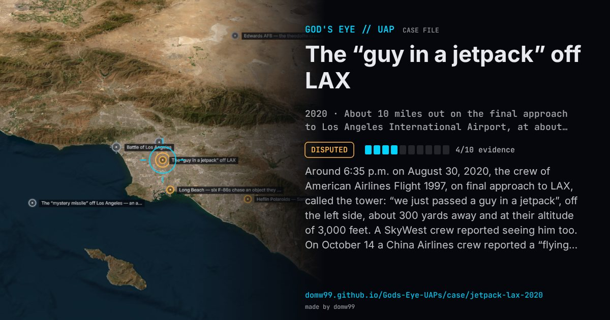

The “guy in a jetpack” off LAX

Around 6:35 p.m. on August 30, 2020, the crew of American Airlines Flight 1997, on final approach to LAX, called the tower: “we just passed a guy in a jetpack”, off the left side, about 300 yards away and at their altitude of 3,000 feet. A SkyWest crew reported seeing him too. On October 14 a China Airlines crew reported a “flying object like a flight suit jetpack” at 6,000 feet on approach, and more reports followed into 2021 and 2022, one with a short video. The FAA and the FBI investigated; no jetpack pilot, launch or landing was ever found.
Explanation
None of the reports has been verified. The FBI said its “working theory” was that pilots might have seen balloons, and in November 2020 a Los Angeles police helicopter filmed a floating balloon of Jack Skellington, from The Nightmare Before Christmas, that looked much like the descriptions. A drone made to look like a man has also been suggested.
What was seen
Shape: A man in a jetpack, at the airliners’ height
Witnesses: The crews of American Airlines 1997 and a SkyWest flight; later a China Airlines crew and others
Duration: Seconds, as the airliners passed
Sources
- Wikipedia — Jetpack man
- The Black Vault — FAA records on the jetpack sighting over LAX, August 30, 2020
Browse
- United States
- 2020s
- Disputed
- Aviation encounters
- Official government documents
- Pilot and aircrew witnesses
- Audio recordings or radio transcripts